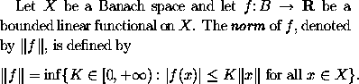
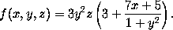
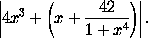
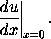

The frequently used left delimiters include (, [ and {,
which are obtained by typing (, [ and
\{
respectively. The corresponding right delimiters are of course
obtained by typing ),
] and \}. In addition | and ||
are used as both left and right delimiters, and are obtained by typing
| and \| respectively. For example, we obtain
by typing
Let $X$ be a Banach space and let $f \colon B \to \textbf{R}$
be a bounded linear functional on $X$. The \textit{norm} of
$f$, denoted by $\|f\|$, is defined by
\[ \|f\| = \inf \{ K \in [0,+\infty) :
|f(x)| \leq K \|x\| \mbox{ for all } x \in X \}.\]
Larger delimiters are sometimes required which have the appropriate height to match the size of the subformula which they enclose. Consider, for instance, the problem of typesetting the following formula:
The way to type the large parentheses is to type
\left(
for the left parenthesis and \right) for the right
parenthesis, and let LaTeX do the rest of the work for you.
Thus the above formula was obtained by typing
\[ f(x,y,z) = 3y^2 z \left( 3 + \frac{7x+5}{1 + y^2} \right).\]
If you type a delimiter which is preceded by \left then
LaTeX will search for a corresponding delimiter preceded by
\right and calculate the size of the delimiters required
to enclose the intervening subformula. One is allowed to balance
a \left( with a \right] (say) if one desires: there
is no reason why the enclosing delimiters have to have the same
shape. One may also nest pairs of delimiters within one another:
by typing
\[ \left| 4 x^3 + \left( x + \frac{42}{1+x^4} \right) \right|.\]
we obtain

By typing \left. and \right. one obtains
null delimiters which are completely invisible. Consider,
for example, the problem of typesetting
We wish to make the vertical bar big enough to match the derivative preceding it. To do this, we suppose that the derivative is enclosed by delimiters, where the left delimiter is invisible and the right delimiter is the vertical line. The invisible delimiter is produced using
\left. and thus
the whole formula is produced by typing
\[ \left. \frac{du}{dx} \right|_{x=0}.\]